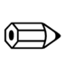
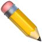
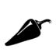
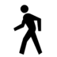
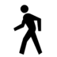
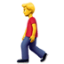
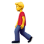

| |
| Version | 1.0 (draft 4) |
| Editors | Mark Davis (Google Inc.), Peter Edberg (Apple Inc.) |
| Date | 2014-12-17 |
| This Version | http://www.unicode.org/reports/tr51/tr51-1.html |
| Previous Version | n/a |
| Latest Version | http://www.unicode.org/reports/tr51 |
| Latest Proposed Update | n/a |
| Revision | 1 |
The main goal of document is to help improve the interoperability of emoji characters across implementations by providing guidelines and data.
The guidelines include design recommendations with guidance for improving interoperability across platforms and implementations and longer-term approaches to emoji. Background information about emoji is also supplied.
The data includes information about Unicode emoji characters, including: which characters normally can be considered to be emoji; which of those should be displayed by default with a text-style versus an emoji-style; how to sort and group emoji characters more naturally; useful categories for character-pickers for mobile and virtual keyboards; and useful annotations for searching emoji.
This is a proposed draft document which may be updated, replaced, or superseded by other documents at any time. Publication does not imply endorsement by the Unicode Consortium. This is not a stable document; it is inappropriate to cite this document as other than a work in progress.
Please submit corrigenda and other comments with the online reporting form [Feedback]. Related information that is useful in understanding this document is found in the References. For the latest version of the Unicode Standard see [Unicode]. For a list of current Unicode Technical Reports see [Reports]. For more information about versions of the Unicode Standard, see [Versions].
WORKING DRAFT!
Emoji are pictographs (pictorial symbols) that are typically presented in a colorful cartoon form and used inline in text. They represent things such as faces, weather, vehicles and buildings, food and drink, animals and plants, or icons that represent emotions, feelings, or activities. Emoji on smartphones and in chat and email applications have become popular worldwide.
The word emoji comes from the Japanese:
絵 (e ≅ picture) 文 (mo ≅ writing) 字 (ji ≅ character).
Emoji may be represented internally by embedded images or as encoded characters, called emoji characters for clarity. Some Unicode characters are normally displayed as emoji; some are normally displayed as ordinary text, and some can be displayed both ways. See also the OED: emoji, n.
Emoji became available in 1999 on Japanese mobile phones. There was an early proposal in 2000 to encode DoCoMo emoji in Unicode. At that time, it was unclear whether these characters would come into widespread use—and there wasn't support from the Japanese mobile phone carriers to add them to Unicode—so no action was taken.
The emoji turned out to be quite popular in Japan, but each mobile phone carrier developed different (but partially overlapping) sets, and each mobile phone vendor used their own text encoding extensions, which were incompatible with one another. The vendors developed cross-mapping tables to allow limited interchange of emoji characters with phones from other vendors, including email. Characters from other platforms that could not be displayed were represented with 〓 (U+3013 GETA MARK), but it was all too easy for the characters to get corrupted or dropped.
When non-Japanese email and mobile phone vendors started to support email exchange with the Japanese carriers, they ran into those problems. Moreover, there was no way to represent these characters in Unicode, which was the basis for text in all modern programs. In 2006, Google started work on converting Japanese emoji to Unicode private-use codes, leading to the development of internal mapping tables for supporting the carrier emoji via Unicode characters in 2007.
There are, however, many problems with a private-use approach, and thus a proposal was made to the Unicode Consortium to expand the scope of symbols to encompass emoji. This proposal was approved in May 2007, leading to the formation of a symbols subcommittee, and in August 2007 the technical committee agreed to support the encoding of emoji in Unicode based on a set of principles developed by the subcommittee. The following are a few of the documents tracking the progression of Unicode emoji characters.
| Date | Doc No. | Title | Authors |
|---|---|---|---|
| 2000-04-26 | L2/00-152 | NTT DoCoMo Pictographs | Graham Asher (Symbian) |
| 2006-11-01 | L2/06-369 | Symbols (scope extension) | Mark Davis (Google) |
| 2007-08-03 | L2/07-257 | Working Draft Proposal for Encoding Emoji Symbols | Kat Momoi, Mark Davis, Markus Scherer (Google) |
| 2007-08-09 | L2/07-274R | Symbols draft resolution | Mark Davis (Google) |
| 2007-09-18 | L2/07-391 | Japanese TV Symbols (ARIB) | Michel Suignard (Microsoft) |
| 2009-01-30 | L2/09-026 | Emoji Symbols Proposed for New Encoding | Markus Scherer, Mark Davis, Kat Momoi, Darick
Tong (Google); Yasuo Kida, Peter Edberg (Apple) |
| 2009-03-05 | L2/09-025R2 | Proposal for Encoding Emoji Symbols | |
| 2010-04-27 | L2/10-132 | Emoji Symbols: Background Data | |
| 2011-02-15 | L2/11-052R | Wingdings and Webdings Symbols | Michel Suignard |
In 2009, the first Unicode characters explicitly intended as emoji were added to Uniocode 5.2 for interoperability with the ARIB set. A set of 722 characters was defined as the union of emoji characters used by Japanese mobile phone carriers: 114 of these characters were already in Unicode 5.2. In 2010, the remaining 608 emoji characters was added to Unicode 6.0, along with some other emoji characters. In 2012, a few more emoji were added to Unicode 6.1, and in 2014 a larger number were added to Unicode 7.0.
Here is a summary of when some of the major sources of pictographs used as emoji were encoded in Unicode. These sources include other characters in addition to emoji.
| Source | Abbr |
Dev. Starts |
Released |
Unicode Version |
Sample Character |
|||
|---|---|---|---|---|---|---|---|---|
B&W |
Color
|
Code |
Name | |||||
| Zapf Dingbats | ZDings |
1991-10
|

|

|
U+270F |
pencil | ||
| ARIB | ARIB |
2007 |
2008-10-01
|
U+2614 |
umbrella with rain drops | |||
| Japanese carriers | JCarrier |
2007 |
2010-10-11
|
U+1F60E |
smiling face with sunglasses | |||
| Wingdings & Webdings | WDings |
2010 |
2014-06-16
|

|
U+1F336 |
hot pepper | ||
For a detailed view of when various source sets of emoji were added to Unicode, see emoji-versions-sources (the format is explained in Data Files). The UCD data file EmojiSources.txt shows the correspondence to the original Japanese carrier symbols.
The Selected Products table lists when Unicode emoji characters were incorporated into selected products. (The PUA characters were a temporary solution.)
| Date | Product | Version | Encoding | Display | Input | Notes, Links |
|---|---|---|---|---|---|---|
| 2008-01 | GMail mobile | PUA | color | palette | モバイル Gmail が携帯絵文字に対応しました | |
| 2008-10 | GMail web | PUA | color | palette | Gmail で絵文字が使えるようになりました | |
| 2008-11 | iPhone | iPhone OS 2.2 | PUA | color | palette | Softbank users, others via 3rd party apps. CNET Japan article on Nov. 21, 2008. |
| 2011-07 | Mac | OSX 10.7 | Unicode 6.0 | color | Character Viewer | |
| 2011-11 | iPhone, iPad | iOS 5 | Unicode 6.0 | color | +emoji keyboard | |
| 2012-06 | Android | Jelly Bean | B&W | 3rd party input | …Quick List of Jelly Bean Emoji… | |
| 2012-09 | iPhone, iPad | iOS 6 | + variation selectors | |||
| 2012-08 | Windows | 8 | Unicode only; no emoji variation sequences | desktop/tablet: b&w; phone: color |
integrated in touch keyboards | |
| 2013-08 | Windows | 8.1 | Unicode only; emoji variation sequences | all: color | touch keyboards; phone: text prediction features (e.g. “love” -> ❤) | Color using scalable glyphs (OpenType extension) |
| 2013-11 | Android | Kitkat | color | native keyboard | …new, colorful Emoji in Android KitKat |
Review Note: The above table may be fleshed out further.
People often ask how many emoji are in the Unicode Standard. This question does not have a simple answer, because there is no clear line separating which pictographic characters should be displayed with a typical emoji style. For a complete picture, see Which Characters are Emoji.
The term emoticon refers to a series of text characters (typically punctuation or symbols) that is meant to represent a facial expression or gesture (sometimes when viewed sideways), such as the following.
;-)
Emoticons predate Unicode and emoji, but were later adapted to include Unicode characters. The following examples use not only ASCII characters, but also U+203F ( ‿ ), U+FE35 ( ︵ ), U+25C9 ( ◉ ), and U+0CA0 ( ಠ ).
^‿^
◉︵◉
ಠ_ಠ
Often implementations allow emoticons to be used to input emoji. For
example, the emoticon ;-) can be mapped to  in a
chat window. The term emoticon is sometimes used in a
broader sense, to also include the emoji for facial expressions and
gestures. That broad sense is used in the Unicode block name Emoticons,
covering the code points from U+1F600 to U+1F64F.
in a
chat window. The term emoticon is sometimes used in a
broader sense, to also include the emoji for facial expressions and
gestures. That broad sense is used in the Unicode block name Emoticons,
covering the code points from U+1F600 to U+1F64F.
Unicode is the foundation for text in all modern software: it’s how
all mobile phones, desktops, and other computers represent the text
of every language. People are using Unicode every time they type a
key on their phone or desktop computer, and every time they look at a
web page or text in an application. It is very important that the
standard be stable, and that every character that goes into it be
scrutinized carefully. This requires a formal process
with a long development cycle. For example, the  dark
sunglasses character was first proposed years before it was released
in Unicode 7.0.
dark
sunglasses character was first proposed years before it was released
in Unicode 7.0.
To be considered for encoding, characters must normally be in
widespread use as elements of text. The emoji and various symbols
were added to Unicode because of their use as characters for
text-messaging in a number of Japanese manufacturers’ corporate
standards, and other places, or in long-standing use in widely
distributed fonts such as Wingdings and Webdings. In many cases, the
characters were added for complete round-tripping to and from a
source set, not because they were inherently of more
importance than other characters. For example, the  clamshell
phone character was included because it was in Wingdings and
Webdings, not because it is more important than, say, a “skunk”
character.
clamshell
phone character was included because it was in Wingdings and
Webdings, not because it is more important than, say, a “skunk”
character.
In some cases, a character was added to complete a set: for example,
a rugby football
character was added to Unicode 6.0 to complement the  american
football character (the soccer ball had
been added back in Unicode 5.2). Similarly, a mechanism was added
that could be used to represent all country flags (those
corresponding to a two-letter unicode_region_subtag),
such as the
american
football character (the soccer ball had
been added back in Unicode 5.2). Similarly, a mechanism was added
that could be used to represent all country flags (those
corresponding to a two-letter unicode_region_subtag),
such as the  flag for Canada,
even though the Japanese carrier set only had 10 country flags.
flag for Canada,
even though the Japanese carrier set only had 10 country flags.
People wanting to submit emoji or any other character for consideration for encoding should see the detailed instructions about how to submit character encoding proposals. It may be helpful to review the Unicode Forum or the Unicode Mail List, as well.
For a list of frequently asked questions on emoji, see the Unicode Emoji FAQ.
This document provides:
It also provides background information about emoji, and discusses longer-term approaches to emoji.
As new Unicode characters are added or the “common practice” for emoji usage changes, the data and recommendations supplied by this document may change in accordance. Thus the recommendations and data will change across versions of this document.
Additions beyond Unicode 7.0 are being addressed by the Unicode Technical Committee: as any new characters are approved, this document will be updated as appropriate.
Review Note: The data presented here is draft, and may change considerably before publication. Some the data presented here, such as collation or annotations, might end up in the Unicode CLDR project instead.
Unicode characters can have different presentations. Emoji characters can have two kinds of presentation:
More precisely, a text presentation is a simple foreground shape whose color which is determined by other information, such as setting a color on the text, while an emoji presentation determines the color(s) of the character, and is typically multicolored. In other words, when you change the text color in a word processor, a character with an emoji presentation will not change color.
Any Unicode character can be presented with text presentation, as in the Unicode charts. Both the name and the representative glyph in the Unicode chart should be taken into account when designing the apparance of the emoji, along with the images used by other vendors. The shape of the character can vary significantly. For example, here are just some of the possible images for U+1F36D LOLLIPOP, U+1F36E CUSTARD, U+1F36F HONEY POT, and U+1F370 SHORTCAKE:

While the shape of the character can vary significantly, designers
should maintain the same “core” shape, based on the shapes used
mostly commonly in industry practice. For example, a U+1F36F HONEY
POT encodes for a pictorial representation of a pot of honey, not for
some semantic like "sweet". It would be unexpected to
represent U+1F36F HONEY POT as a sugar cube, for example. Deviating
too far from that core shape can cause interoperability problems: see
accidentally-sending-friends-a-hairy-heart-emoji.
Direction (whether a person or object faces to the right or left, up
or down) should also be maintained where possible, because a change
in direction can change the meaning: when sending 

 “crocodile shot by
police”, people expect any recipient to see the pistol pointing in
the same direction as when they composed it. Similarly, the U+1F6B6 pedestrian
should face to the left , not to the right.
“crocodile shot by
police”, people expect any recipient to see the pistol pointing in
the same direction as when they composed it. Similarly, the U+1F6B6 pedestrian
should face to the left , not to the right.
General-purpose emoji for people and body parts should also not be
given overly specific images: the general recommendation is to be as
neutral as possible regarding race, ethnicity, and gender. Thus for
the character U+1F64B happy person raising one hand, the
recommendation is to use a neutral graphic like  instead of an overly-specific image like
instead of an overly-specific image like  . This includes the characters listed in the
annotations chart under “human”.
The representative glyph used in the charts, or images from other
vendors may be misleading: for example, the construction worker
. This includes the characters listed in the
annotations chart under “human”.
The representative glyph used in the charts, or images from other
vendors may be misleading: for example, the construction worker  may be male or female.
For more information, see the Unicode Emoji
FAQ.
may be male or female.
For more information, see the Unicode Emoji
FAQ.
Names of symbols such as BLACK MEDIUM SQUARE or WHITE MEDIUM SQUARE are not meant to indicate that the corresponding character must be presented in black or white, respectively; rather, the use of “black” and “white” in the names is generally just to contrast filled versus outline shapes, or a darker color fill versus a lighter color fill. Similarly, in other symbols such as the hands U+261A BLACK LEFT POINTING INDEX and U+261C WHITE LEFT POINTING INDEX, the words “white” and “black” also refer to outlined versus filled, and do not indicate skin color.
However, other color words in the name, such as YELLOW, typically provide a recommendation as to the emoji presentation, which should be followed to avoid interoperability problems.
Review Note: Eventually we will need to update the core spec and FAQ to match the recommendations given here.
Emoji characters may not always be displayed on a white background. They are often best given a faint, narrow contrasting border to keep the character visually distinct from a similarly colored background. Thus a Japanese flag would have a border so that it would be visible on a white background, and a Swiss flag have a border so that it is visible on a red background.
Current practice is for emoji to have a square aspect ratio, deriving from their origin in Japanese. For interoperability, it is recommended that this practice be continued with current and future emoji.
Flag emoji characters are discussed in Annex B: Flags.
Combining marks may be applied to emoji, just like they can be
applied to other characters. When that is done, the combination
should take on an emoji presentation. For example, a  is represented as the sequence "1" plus an emoji variation
selector plus U+20E3 COMBINING ENCLOSING KEYCAP. Systems are
unlikely, however, to support arbitrary combining marks with
arbitrary emoji. Aside from U+20E3, the following can be used:
is represented as the sequence "1" plus an emoji variation
selector plus U+20E3 COMBINING ENCLOSING KEYCAP. Systems are
unlikely, however, to support arbitrary combining marks with
arbitrary emoji. Aside from U+20E3, the following can be used:
For example,  (pedestrian
crossing ahead) can be represented as + U+20E4, and
(pedestrian
crossing ahead) can be represented as + U+20E4, and  (no bicycles allowed) can be represented as
+ U+20E0.
(no bicycles allowed) can be represented as
+ U+20E0.
Review Note: The recommended base characters would be associated with traffic signs and perhaps a few other characters. Should we have data listing those, so that implementations would know what to concentrate on?
The following emoji have explicit gender, based on the name and explicit, intentional contrasts with other characters.
U+1F466 boy
U+1F467 girl
U+1F468 man
U+1F469 woman
U+1F474 older man
U+1F475 older woman
U+1F46B man and woman holding hands
U+1F46C two men holding
hands
U+1F46D two women holding hands
U+1F6B9 mens
symbol
U+1F6BA womens symbol
U+1F478 princess
U+1F46F woman with bunny ears
U+1F470 bride with veil
U+1F472 man with gua pi mao
U+1F473 man with turban
U+1F574 man in business suit
levitating
U+1F385 father christmas
All others should be depicted in a gender-neutral way.
Review Note: For clarity, we may consider documenting gender-neutral characters whose names may be misleading, like guardsman. To comment on this issue, go to Feedback.
People all over the world want to have emoji that reflect more human diversity, especially for skin tone. The Unicode emoji characters for people and body parts are meant to be generic, yet following the precedents set by the original Japanese carrier images, they are often shown with a light skin tone instead of a more generic (nonhuman) appearance, such as a yellow/orange color or a silhouette.
Five symbol modifier characters that provide for a range of skin tones for human emoji are planned for Unicode Version 8.0 (scheduled for mid-2015). These characters are based on the six tones of the Fitzpatrick scale, a recognized standard for dermatology (there are many examples of this scale online, such as FitzpatrickSkinType.pdf). The exact shades may vary between implementations.
| Code | Name | Samples | |
|---|---|---|---|
| U+1F3FB | EMOJI MODIFIER FITZPATRICK TYPE-1-2 | ||
| U+1F3FC | EMOJI MODIFIER FITZPATRICK TYPE-3 | ||
| U+1F3FD | EMOJI MODIFIER FITZPATRICK TYPE-4 | ||
| U+1F3FE | EMOJI MODIFIER FITZPATRICK TYPE-5 | ||
| U+1F3FF | EMOJI MODIFIER FITZPATRICK TYPE-6 | ||
Review Note: the example shades may change before release.
These characters have been designed so that even where diverse color images for human emoji are not available, readers can see what the intended meaning was.
Review Note: the example images below should be refined before release, especially the stippled image.
The default representation of these modifier characters when used alone is as a color swatch. Whenever one of these characters follows certain characters (such as WOMAN), then a font should show the sequence as a single glyph corresponding to the image for the person(s) or body part with the specified skin tone, such as the following:
 + →
+ → 
However, even if the font doesn’t show the combined character, the user can still see that a skin tone was intended:

This may fall back to a black and white stippled or hatched image such as when colorful emoji are not supported.
 +
+  →
→ 
When a human emoji is not followed by a emoji modifier character, it should use a generic non-realistic skin tone—such as that typically used for the smiley faces—or a silhouette. Dark hair is recommended for generic images that include hair. People of every skin tone can have black (or very dark brown) hair, so it is more neutral. One exception is PERSON WITH BLOND HAIR, which needs to have blond hair regardless of skin-tone.
There are several emoji for multi-person groups, such as COUPLE WITH HEART. The emoji modifiers affect all the people in such characters. However, real multi-person groupings include many in which various members have different skin tones. For representing such groupings, users can employ techniques already found in current emoji practice, in which a sequence of emoji is intended to be read together as a unit, with each emoji in the sequence contributing some piece of information about the unit as a whole. Users can simply enter separate emoji characters for each member of the group, each with its own skin tone e.g.: <MAN, TYPE-1-2, WOMAN, TYPE-3>, possibly preceded by a group character.
Implementations can present the emoji modifiers as separate characters in an input palette, or present the combined characters using mechanisms such as long press.
The emoji modifiers are not intended for combination with arbitrary emoji characters. Instead, they are restricted to the following 129 characters, in two separate sets:
| Type | Images | Code points and names (in code point order) |
|---|---|---|
| Minimal Set (27 code points) |
U+1F385 FATHER CHRISTMAS U+1F466 BOY …U+1F469 WOMAN U+1F46E POLICE OFFICER …U+1F478 PRINCESS U+1F47C BABY ANGEL U+1F481 INFORMATION DESK PERSON …U+1F482 GUARDSMAN U+1F486 FACE MASSAGE …U+1F487 HAIRCUT U+1F645 FACE WITH NO GOOD GESTURE …U+1F647 PERSON BOWING DEEPLY U+1F64B HAPPY PERSON RAISING ONE HAND U+1F64D PERSON FROWNING …U+1F64E PERSON WITH POUTING FACE |
|
| Optional Set (102 code points) |
U+261D WHITE UP POINTING INDEX U+2639 WHITE FROWNING FACE …U+263A WHITE SMILING FACE U+270A RAISED FIST …U+270D WRITING HAND U+1F3C2 SNOWBOARDER …U+1F3C4 SURFER U+1F3C7 HORSE RACING U+1F3CA SWIMMER U+1F440 EYES …U+1F450 OPEN HANDS SIGN U+1F47F IMP U+1F483 DANCER U+1F485 NAIL POLISH U+1F48B KISS MARK U+1F4AA FLEXED BICEPS U+1F590 RAISED HAND WITH FINGERS SPLAYED U+1F595 REVERSED HAND WITH MIDDLE FINGER EXTENDED …U+1F596 RAISED HAND WITH PART BETWEEN MIDDLE AND RING FINGERS U+1F600 GRINNING FACE …U+1F637 FACE WITH MEDICAL MASK U+1F641 SLIGHTLY FROWNING FACE …U+1F642 SLIGHTLY SMILING FACE U+1F64C PERSON RAISING BOTH HANDS IN CELEBRATION U+1F64F PERSON WITH FOLDED HANDS U+1F6A3 ROWBOAT U+1F6B4 BICYCLIST …U+1F6B6 PEDESTRIAN U+1F6C0 BATH |
Of these characters, it is strongly recommended that the Minimal set for combination be supported. No characters outside of these two sets should be combined with emoji modifiers. These sets may change over time, with successive versions of this document.
Review Note: These sets may change before this document is final; we would particularly appreciate feedback on whether particular characters should be removed from either of these sets. In particular, we removed the "groupings", like FAMILY #1f46a, presuming that they should always be have a generic appearance, and then be followed by the human images for the family, if desired. To comment on this issue, go to Feedback.
The following chart shows the types of display that are expected, depending on the level of support for the emoji modifier:
| Support Level | Emoji Type | Source | Display Color | Display B&W |
|---|---|---|---|---|
| Fully supported | minimal /optional |
|||
| other | ||||
| Fallback | minimal /optional |
|||
| other | ||||
| Unsupported | minimal /optional |
|||
| other |
The “Unsupported” rows show how the character would typically appear on a system that doesn't have a font with that character in it: with a missing glyph indicator.
The interaction between variation selectors and emoji modifiers is specified as follows:
Review Note: The above rules should be illustrated in a table.
We define a minimal emoji modifier sequence to be minimal_set_element + emoji_modifier. A minimal emoji modifier sequence should be treated as a single grapheme cluster for editing purposes (cursor moment, deletion, etc.); word break, line break, etc.
For input, this can be transparent to the user. On a phone, for example, a long-press on a human figure can bring up a minipalette of different skin tones, without the user having to separately find the human figure and then the modifier. The following shows one way that could appear.
Of course, there are many other types of diversity in human appearance besides different skin tones: Different hair styles and color, use of eyeglasses, various kinds of facial hair, different body shapes, different headwear, and so on. It is beyond the scope of Unicode to provide an encoding-based mechanism for representing every aspect of human appearance diversity that emoji users might want to indicate. The best approach for communicating very specific human images—or any type of image in which preservation of specific appearance is very important—is the use of embedded graphics, as described in Longer Term Solutions.
Review Notes:
There are 722 Unicode emoji characters corresponding to the Japanese carrier sets. In addition, most vendors support another 126 characters (from Unicode 6.0 and 6.1).
There are another 247 flags that can be optionally supported with Unicode 6.0 characters. (Aside from the 10 from the Japanese carrier sets.)
| |
For more about flags, see Annex B: Flags.
One of the goals of this document is to provide data for which Unicode characters should normally be considered to be emoji. Based on the data under development, would include the following 152 characters. Most, but not all, of these are new in Unicode 7.0. This gives a total of about 1,250 emoji characters (or sequences) for Unicode 7.0.
Thus a vendor could provide a colorful appearance for each of these, such as the following for :
For Unicode 8.0 characters, see Annex D: Emoji Candidates for Unicode 8.0.
Review Note: We would like feedback on characters that should be added or removed from the recommended list. Removal would be warranted if the character is not currently suited for use with an emoji presentation (although it could be added in the future. Excluded punctuation and symbols can be reviewed at other-labels.html, to see if they should be included. To comment on this issue, go to Feedback.
This document provides data files, described in the section Data Files, for determining the set of characters which are expected to have an emoji presentation, either as a default or as a alternate presentation. While Unicode conformance allows any character to be given an emoji representation, characters that are not listed in the Data Files should not normally be given an emoji presentation. For example, pictographic symbols such as keyboard symbols or math symbols (like ANGLE) that should never be treated as emoji. These are current recommendations: existing symbols can be added to this list over time.
This data was derived by starting with the characters that came from the original Japanese sets, plus those that major vendors have provided emoji fonts for. Characters that are similar to those in shape or design were then added. Often these characters are in the same Unicode blocks as the original set, but sometimes not.
This document takes a functional view as to the identification of emoji, which is that pictographs—or symbols that have a graphical form that people may treat as pictographs, such as U+2388 HELM SYMBOL (introduced in Unicode 3.0)—are categorized as emoji, since it is reasonable to give them either an emoji or text presentation, such as:
→
This follows the pattern set by characters such as U+260E BLACK TELEPHONE (introduced in Unicode 1.1), which can have either an emoji or text presentation, such as:
 →
→
The data does not include non-pictographs, except for those in Unicode that are used to represent characters from emoji sources, such as:
 or
or 
Game pieces, such as the dominos (üÄ∞ üı üÄ≤ ... üÇë üÇí), are currently
not included as emoji, with the exceptions of U+1F0CF (  ) PLAYING CARD BLACK JOKER and U+1F004 ( 
) PLAYING CARD BLACK JOKER and U+1F004 (   )
MAHJONG TILE RED DRAGON. These are included because they correspond
each to an emoji character from one of the carrier sets.
 )
MAHJONG TILE RED DRAGON. These are included because they correspond
each to an emoji character from one of the carrier sets.
Certain emoji have defined variation sequences, where an emoji character can be followed by one of two invisible variation selectors:
This capability was added in Unicode 6.1. Some systems may also provide this distinction with higher-level markup, rather than variation sequences. For more information on these selectors, see the file StandardizedVariants.html.
Implementations should support both styles of presentation for the characters with variation sequences, if possible. Most of these characters were emoji that were unified with preexisting characters. Because people are now using emoji presentation for a broader set of characters, it is anticipated that more such variation sequences will be needed.
Review Note: Whenever a character could reasonably be used with either presentation, variation sequences should be proposed for Unicode 8.0, scheduled for mid-2015.
However, even where the variation selectors exist, it has not been clear for implementers what the default presentation for pictographs should be: emoji or text? That means that a piece of text may show up in a different style than intended when shared across platforms. While this is all a perfectly legitimate for Unicode characters‚Äîpresentation style is never guaranteed‚Äîit is important to have a shared sense among developers of when to use emoji presentation by default, so that there are fewer unexpected and “jarring” presentations. That is, to promote interoperability across platforms and applications, implementations need to know what the generally expected default presentation is.
That is, there has been no clear line for implementers between three categories of Unicode characters:
The data files, described in the section Data
Files, provides data to distinguish between the first two
categories: see the Default column of full-emoji-list.
The data assignment is based upon current usage in browsers for
Unicode 6.3 characters. For other characters, especially the new 7.0
characters, the assignment is based on that of the related emoji
characters. For example, the “vulcan” hand  is marked
as emoji-default because of the emoji styling currently
given to other hands like
is marked
as emoji-default because of the emoji styling currently
given to other hands like  . The text-only
characters are all those not listed in the data files.
. The text-only
characters are all those not listed in the data files.
In general, emoji characters are marked as text-default if they were in common use and predated the use of emoji. The characters are otherwise marked as emoji-default. For example, the negative squared A and B are text-default, while the negative squared AB is emoji-default. The reason is that A and B are part of a set of negative squared letters A-Z, while the AB was a new character. The default status may change over time, however, as a result in the change in usage.
The presentation of a given emoji character depends on the environment, whether or not there is an emoji or text variation selector, and the default presentation style (emoji vs text). The environments include:
| Environment | Examples |
|---|---|
| Text-Only | word processing |
| Mixed | plain web pages |
| Presentation | texting, chats, slides |
Review Note: Flesh out the purpose behind what is currently in the table, and provide examples.
Based on those factors, here is typical presentation behavior. However, these guidelines may change with changing user expectations.
| Environment | with Emoji VS |
with Text VS |
with no VS |
|
|---|---|---|---|---|
text-default |
emoji-default |
|||
| Text-Only |
emoji
|
text |
text |
text |
| Mixed |
emoji
|
text |
text |
emoji
|
| Presentation |
emoji
|
text |
emoji
|
emoji
|
Review Note: We would like feedback on draft proposed default presentation: whether characters should have their defaults changed from emoji to text or vice versa. The chart for these characters is at text-style.html. To comment on this issue, go to Feedback.
Neither the Unicode code point order, nor the standard Unicode Collation ordering (DUCET), are currently well suited for emoji, since they separate conceptually-related characters. For example, here is a selection of characters sorted by DUCET; to users this ordering appears quite random:


The emoji-ordering data file shows an ordering for emoji characters that groups them together in a more natural fashion.


The purpose of this ordering is to group characters more naturally for the purpose of selection, but also to group them more naturally in sorted lists.
Review Note: Flesh out the text to make a better distinction between ordering and grouping.
Review Note: We would like feedback on the proposed ordering. The eventual ordering would likely go into CLDR. To comment on this issue, go to Feedback.
Emoji are not typically typed on a keyboard. Instead, they are
generally picked from a palette, or recognized via a dictionary. The
mobile keyboards typically have a  button to select a palette
of emoji, such as in the left image below. Clicking on the
button to select a palette
of emoji, such as in the left image below. Clicking on the  button reveals a palette, as in the right image.
button reveals a palette, as in the right image.

|

|
The palettes need to be organized in a meaningful way for users. They typically provide a small number of broad categories (5-10), such as People (anything associated with people), Nature, and so on. These categories typically have 100-200 emoji. More advanced palettes will have long-press enabled, so that people can press-and-hold on an emoji and have a set of related emoji pop up. This allows for faster navigation, with less scrolling through the pallette.
Annotations for emoji characters are much more finely grained
keywords. They can be used for searching characters, and are often
easier than palettes for entering emoji characters. For example, when
you type “hourglass” on your mobile phone, you could see and pick
from either of the matching emoji characters  or
or  . That is often much easier than scrolling through
the palette and visually inspecting the screen. Input mechanisms may
also map emoticons to emoji as keyboard shortcuts: typing
:-) can result in
. That is often much easier than scrolling through
the palette and visually inspecting the screen. Input mechanisms may
also map emoticons to emoji as keyboard shortcuts: typing
:-) can result in  .
.
In some input systems, a word or phrase bracketed by colons is used
to explicitly pick emoji characters. Thus typing in “I saw an :ambulance:”
is converted to “I saw an  ”. For completeness,
such systems might support all of the full Unicode names, such as :first
quarter moon with face: for . Spaces within the phrase
may be represented by _, as in the following:
”. For completeness,
such systems might support all of the full Unicode names, such as :first
quarter moon with face: for . Spaces within the phrase
may be represented by _, as in the following:
“my :alarm_clock: didn’t work”
→
“my  didn’t work”.
didn’t work”.
However, in general the full Unicode names are not especially suitable for that sort of use; they were designed to be unique identifiers, and tend to be overly long or confusing.
Searching includes both searching for emoji characters in queries,
and finding emoji characters in the target. These are most useful
when they include the annotations as synonyms or hints. For example,
when you search for  on yelp.com,
you see matches for “gas station”. Conversely, searching for “gas
pump” in a search engine could find pages containing
on yelp.com,
you see matches for “gas station”. Conversely, searching for “gas
pump” in a search engine could find pages containing  . Similarly, searching for “gas pump” in an email
program can bring up all the emails containing
. Similarly, searching for “gas pump” in an email
program can bring up all the emails containing  .
.
For both palette categories and annotations, there is no requirement
for uniqueness: an emoji should show up wherever users would expect
them. A gas pump  might show up under “object” and
“travel”; a heart under “heart” and
“emotion”, a under “animal”, “cat”, and “heart”.
might show up under “object” and
“travel”; a heart under “heart” and
“emotion”, a under “animal”, “cat”, and “heart”.
Annotations are language-specific: searching on yelp.de,
you’d expect a search for  to result in matches for
“Tankstelle”. Thus annotations need to be in multiple languages to be
useful across languages. They should also include regional
annotations within a given language, like “petrol station”, which
you’d expect search for
to result in matches for
“Tankstelle”. Thus annotations need to be in multiple languages to be
useful across languages. They should also include regional
annotations within a given language, like “petrol station”, which
you’d expect search for  to result in on yelp.co.uk.
An English annotation cannot simply be translated into different
languages, since different words may have different associations in
different languages. The emoji
to result in on yelp.co.uk.
An English annotation cannot simply be translated into different
languages, since different words may have different associations in
different languages. The emoji  may be associated with Mexican or Southwestern restaurants in the US,
but not be associated with them in, say, Greece. The scope of this
document is limited to English annotations, but can provide an
example for other languages.
may be associated with Mexican or Southwestern restaurants in the US,
but not be associated with them in, say, Greece. The scope of this
document is limited to English annotations, but can provide an
example for other languages.
There is one further kind of annotation, called a TTS name, for text-to-speech processing. For accessibility when reading text, it is useful to have a short, descriptive name for an emoji character. A Unicode character name can often serve as a basis for this, but its requirements for name uniqueness often ends up with names that are overly long, such as black right-pointing double triangle with vertical bar for . TTS names are also outside the current scope of this document.
Review Note: We would like feedback on changes to the emoji-annotations: additions, removals, or replacements. The eventual annotations would likely go into CLDR. Note that we are not interested in acronyms. One particular issue is whether or not to include forms of the same word: smile, smiles, smiling, smiled, smiley. The current policy is to only include one form, assuming that any system using the annotations would handle related forms. However, the data has not been completely cleaned up to reflect that policy. To comment on this issue, go to Feedback.
The longer-term goal for implementations should be to support embedded graphics. That would allow arbitrary emoji symbols, and not be dependent on additional Unicode encoding. Some examples of where this is done are:
However, to be as effective and simple to use as emoji characters, a full solution requires significant infrastructure changes to allow simple, reliable input and transport of images (stickers) in texting, chat, mobile phones, email programs, virtual and mobile keyboards, and so on. (Even so, such images will never interchange in environments that only support plain text, such as email addresses.) Until that time, many implementations will need to use Unicode emoji instead.
For example, one necessary infrastructure change is to adapt mobile
keyboards. Enabling embedded graphics would involve adding an
additional custom mechanism for users to add in their own graphics or
purchase additional sets, such as a  sign to add an
image to the palette above. This would prompt the user to paste or
otherwise select a graphic, and add annotations for dictionary
selection.
sign to add an
image to the palette above. This would prompt the user to paste or
otherwise select a graphic, and add annotations for dictionary
selection.
Once this is done, the user could then select those graphics in the same way as selecting the Unicode emoji. If users started adding many custom graphics, the mobile keyboard might even be enhanced to allow ordering or organization of those graphics so that they can be quickly accessed. The extra graphics would need to be disabled if the target of the mobile keyboard (such as an email header line) would only accept text.
Other features required to make embedded graphics work well include the ability of images to scale with font size, inclusion of embedded images in more transport protocols, switching services and applications to use protocols that do permit inclusion of embedded images (eg, MMS versus SMS for text messages). There will always, however, be places where embedded graphics can’t be used—such as email headers, SMS messages, or file names. There are also privacy aspects to implementations of embedded graphics: if the graphic itself is not packaged with the text, but instead is just a reference to an image on a server, then that server could track usage.
There’s been considerable media attention to emoji in 2014. For example, there were some 6,000 articles on the emoji appearing in Unicode 7.0, according to Google News. See the Emoji press page for many samples of such articles, and also the Keynote from the 38th Internationalization & Unicode Conference.
This is a working draft document, and the data is supplied for now in HTML files, so that people can see sample appearances for the characters.
Review Note: these files will not necessarily be included in the final document, although the emoji-data.txt, the full-emoji-list.html, and emoji-ordering.html will probably be in the final version. Feedback on the files that are more useful would be appreciated.
The most important feedback on data would be on emojiData.txt. These are, in priority order, the following:
TO_DO:
The available files are:
| File | Description |
|---|---|
| full-emoji-list | The main file: a list with images showing depictions from different sources, and the default status and annotations. For the column descriptions, see Full Emoji List. |
| emoji-data.txt | A plain text file with the information from the html file, plus the ordering. For now, the U+ is present, to make importing into a spreadsheet easier |
| missing-emoji-list | A list with images showing where sources don’t have emoji
images. The images are not what would appear in that
source; instead, they show cases that are marked missing
for that source in the full-emoji-list
file. So, for example, the image of in the Android column
means that that character (U+260E black telephone) is
marked as missing for Android in full-emoji-list.
Characters in a “common” row are missing in all of the sources:
the image of |
| emoji-list | An abbreviated list showing characters, not images. For checking browser/platform support. |
| emoji-style | The proposed default presentation style for each character. Separate rows show the presentation with and without variation selectors, where applicable. Flags are shown with images. Also in column 6 of Full Emoji List. |
| emoji-labels | Characters grouped by palette category. These are building blocks for palette categories, which would group some of these together. |
| emoji-annotations | Characters grouped by annotation. Also in column 7 of Full Emoji List. The annotations are meant to be used in combination to winnow down the matches, so :face moon: would match the characters annotated with both “face” and with “moon”. |
| emoji-ordering | Draft ordering of emoji characters that groups like characters together. Unlike the labels or annotations, each character only occurs once. The flags are presented according to English name. That can be varied by language: for more information, see Annex B: Flags. |
| other-labels | Other general symbols and punctuation. That can be used to scan for other characters that might qualify for emoji presentation. |
| emoji-versions | A view of when different emoji were added to Unicode, by Unicode version. |
| emoji-versions-sources | A view of when different emoji were added to Unicode, and the sources. (See the Version information in Full Emoji List for the source description.) The sources indicate where a Unicode character corresponds to a character in the source. In many cases, the character had already been encoded well before the source was considered for other characters. |
| text-style.html | Provides a summary view of which characters have the default text style, and which have the default emoji style. |
Review Note: These are all live documents and may be updated or changed at any time during the draft development process.
Typically, hovering over an image usually shows the code point and name, and clicking on the image goes to the respective row in the Full Emoji List. Each image has the respective character as an alt value, so copying the image into plain text should (OS permitting) give the plain text character for that image.
The Symbola font can be installed for a readable text presentation where the emoji presentation or black&white fonts are not available on your browser. Your browser’s zoom is also useful for examining the characters and images.
For the full-emoji-list file, the columns are:
| Column | Description | ||
|---|---|---|---|
| Count | A line count, for reference. | ||
| Code | The code point(s) for the emoji characters. Some rows have more than one code point where a sequence is required, such as for flags and keycaps. Clicking on the code point puts a link to that row in the address bar. | ||
| Browser | The character, showing whatever image would be native for the browser. | ||
| B&W* | The visual appearance of the codes, using the Unicode chart font, plus PNGs for the flags. | ||
| Apple, Andr, Twit, Wind, GMail, DCM, KDDI, SB | Images from the respective sources for
comparison. The GMail...KDDI are for comparison with images used
before incorporation into Unicode.
Note that for the cells marked missing, there are sometimes B&W images that would appear on the source that are not shown here. For example, U+2639 is shown as missing for Apple, but there are B&W images for it available on Apple platforms. |
||
| Name | The character name in lowercase (or an informative gloss, for the case of flags and keycaps). | ||
| Version | The version of Unicode in which the emoji was added. A superscript indicates the source of the character. Where a Unicode character corresponds to multiple sources, multiple superscripts will be present. The sources are: | ||
| z | ZDings | Zapf Dingbats | |
| a | ARIB | ||
| j | JCarrier | Japanese telephone carriers | |
| w | WDings | Wingdings & Webdings | |
| x | Other | other sources | |
| Default | The draft proposed default presentation style. A * indicates that there are variation selectors (text and emoji) for the character. | ||
| Annotations | A rough-draft list of informative annotations. Clicking on a link goes to the respective row in the emoji-annotations. | ||
Because the name and code point are already present, hovering or clicking on an image doesn’t have the same effect as in other files. However, the alt values are still present for cut and paste into plain text.
Review Note: add more header information to the files and/or flesh out here and have them link to the right sections here.
The goal for this annex is to collect the terminology used in connection to emoji for eventual incorporation into the Unicode Glossary.
Emoji - A colorful pictograph that can be used inline in text. Internally the representation is either (a) an image or (b) an encoded character. The term emoji character can be used for (b) where not clear from context.
Emoticon - (1) A series of text characters (typically punctuation or symbols) that is meant to represent a facial expression or gesture such as ;-) (2) a broader sense, also including emoji for facial expressions and gestures.
Review Note: Others TBD.
There are 26 REGIONAL INDICATOR symbols that can be used in pairs to represent country flags. This mechanism was designed to be extensible, rather than be limited to just the 10 flags supported by the Japanese carriers.
Where flag emoji characters are supported, they should not just be limited to the 10 Japanese carrier flags. To avoid discriminating against other flags, they should instead be present for all of the valid country codes. More specifically, these are the Unicode region subtags that are neither deprecated, nor private use, and nor macroregions (with the exception of the EU). This can be determined mechanically from data in CLDR. An overseas territory sometimes doesn't have its own flag, or only has flags for subregions. In such cases, it may share the same flag as for the country.
Emoji are generally presented with a square aspect ratio, which
presents a problem for flags. The flag for Qatar  is over 250% wider than tall; for Switzerland
is over 250% wider than tall; for Switzerland  it is square; for Nepal
it is square; for Nepal  it is over 20% taller
than wide. To avoid a ransom-note effect, implementations may want to
use a fixed ratio across all flags, such as 150%, with a blank band
on the top and bottom. (The average width for flags is between 150%
and 165%.) Narrower flags, such as the Swiss flag, may
also have white bands on the side.
it is over 20% taller
than wide. To avoid a ransom-note effect, implementations may want to
use a fixed ratio across all flags, such as 150%, with a blank band
on the top and bottom. (The average width for flags is between 150%
and 165%.) Narrower flags, such as the Swiss flag, may
also have white bands on the side.
Flags should have a visible edge. One option is to use a 1 pixel gray line chosen to be contrasting with the adjacent field color.
The code point order of flags is by region code, which will not be intuitive for viewers, since that rarely matches the order of countries in the viewer's language. English speakers are surprised that the flag for Germany comes before the flag for Djibouti. An alternative is to present the sorted order according to the localized country name, using CLDR data.
For an open-source set of flag images (png and svg), see region-flags.
The selection of new emoji is based on a number of factors. None of these factors are completely determinant. For example, the word for an object may be extremely common on the internet, but the object not necessarily a good candidate due to other factors.
Review Note: The following is a draft from the emoji subcommittee, and has yet not been reviewed yet by the Unicode Technical Committee. To comment on these factors, go to Feedback.
Aside from the new diversity characters, the Unicode Consortium has accepted 37 other emoji characters as candidates for Unicode 8.0, scheduled for mid-2015. These are candidates—not yet finalized—so some may not appear in the release.
Review Note: The characters may also change before release. For example, we have gotten feedback that it would be better to have a STUPA character than the DHYANI BUDDHA. Names may also change or annotations be added: for example, PLACE OF WORSHIP could become PLACE OF WORSHIP OR MEDITATION. Feedback on these characters is welcome: go to Feedback.
The Emoji modifiers are discussed in Section 2.2 Diversity. The Faces, Hands, and Zodiac Symbols are for compatibility with other messaging and mail systems. There are many other possible emoji that could be added, but releases need to be restricted to a manageable number. Many other emoji characters, such as other food items and symbols of religious significance, are still being assessed, and could appear in a future release of the Unicode Standard. See also Annex C: Selection Factors.
The images below are draft black and white versions for the Unicode charts. They are likely to change before release. As with other emoji characters, the colorful emoji presentation may vary by vendor. The TACO, for example, could look something like:
| Glyph | Name |
|---|---|
| Emoji modifiers (See Section 2.2 Diversity) | |
| EMOJI MODIFIER FITZPATRICK TYPE-1-2 | |
| EMOJI MODIFIER FITZPATRICK TYPE-3 | |
| EMOJI MODIFIER FITZPATRICK TYPE-4 | |
| EMOJI MODIFIER FITZPATRICK TYPE-5 | |
| EMOJI MODIFIER FITZPATRICK TYPE-6 | |
| Faces, Hands, and Zodiac Symbols | |
| ZIPPER-MOUTH FACE | |
| MONEY-MOUTH FACE | |
| FACE WITH THERMOMETER | |
| NERD FACE | |
| THINKING FACE | |
| FACE WITH ROLLING EYES | |
| UPSIDE-DOWN FACE | |
| FACE WITH HEAD-BANDAGE | |
| ROBOT FACE | |
| HUGGING FACE | |
| SIGN OF THE HORNS | |
| CRAB (also Cancer) | |
| SCORPION (also Scorpio) | |
| LION FACE (also Leo) | |
| BOW AND ARROW (also Sagittarius) | |
| AMPHORA (also Aquarius) | |
| Symbols of Religious Significance | |
| PLACE OF WORSHIP | |
| KAABA | |
| MOSQUE | |
| SYNAGOGUE | |
| DHYANI BUDDHA | |
| MENORAH WITH NINE BRANCHES | |
| PRAYER BEADS | |
| Most Popularly Requested Emoji | |
| HOT DOG | |
| TACO | |
| BURRITO | |
| CHEESE WEDGE | |
| POPCORN | |
| BOTTLE WITH POPPING CORK | |
| TURKEY | |
| UNICORN FACE | |
| Missing Top Sports Symbols | |
| CRICKET BAT AND BALL | |
| VOLLEYBALL | |
| FIELD HOCKEY STICK AND BALL | |
| ICE HOCKEY STICK AND PUCK | |
| TABLE TENNIS PADDLE AND BALL | |
| BADMINTON RACQUET AND BIRDIE | |
Mark Davis and Peter Edberg created the initial versions of this document, and maintain the text.
Thanks to Shervin Afshar, Michele Coady, Craig Cummings, Norbert Lindenberg, Ken Lunde, Katsuhiko Momoi, Katrina Parrott, Michelle Perham, Roozbeh Pournader, Markus Scherer, and Ken Whistler for feedback on and contributions to this document, including earlier versions. Thanks to Michael Everson for draft candidate images.
Review Note: We’ll flesh out the references later.
| [Unicode] | The Unicode Standard For the latest version, see: http://unicode.org/versions/latest/ |
| [UTR36] | UTR #36: Unicode
Security Considerations http://unicode.org/reports/tr36/ |
| [UTS39] | UTS #39: Unicode
Security Mechanisms http://unicode.org/reports/tr39/ |
| [Versions] | Versions of the Unicode Standard http://unicode.org/versions/ For details on the precise contents of each version of the Unicode Standard, and how to cite them. |
The following summarizes modifications from the previous revisions of this document.
Revision 1
Copyright © 2014 Unicode, Inc. All Rights Reserved. The Unicode Consortium makes no expressed or implied warranty of any kind, and assumes no liability for errors or omissions. No liability is assumed for incidental and consequential damages in connection with or arising out of the use of the information or programs contained or accompanying this technical report. The Unicode Terms of Use apply.
Unicode and the Unicode logo are trademarks of Unicode, Inc., and are registered in some jurisdictions.